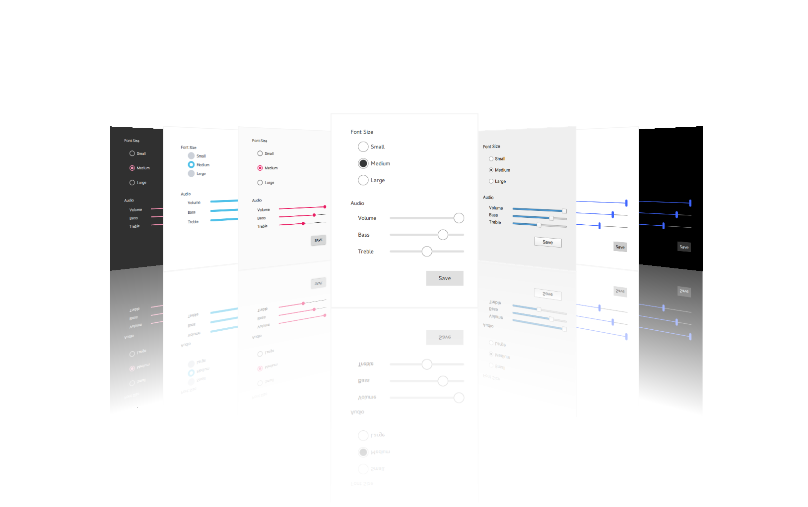

Qt Quick Controls
Qt Quick Controls provides a set of controls that can be used to build complete interfaces in Qt Quick. The module was introduced in Qt 5.7.

Qt Quick Controls comes with a selection customizable styles. See Styling Qt Quick Controls for more details.
Prerequisites
The QML types can be imported into your application using the following import statement in your .qml file:
import QtQuick.Controls 2.13
The C++ classes can be included into your application using the following include statement:
#include <QtQuickControls2>
To link against the corresponding C++ libraries, add the following to your qmake project file:
QT += quickcontrols2
For more details, see Getting Started with Qt Quick Controls.
Building From Source
When building from source, ensure that the Qt Graphical Effects module is also built, as Qt Quick Controls requires it.
The Qt Image Formats module is recommended, but not required. It provides support for the .webp format used by the Imagine style.
Versions
Qt Quick Controls.0 was introduced in Qt 5.7. Subsequent minor Qt releases increment the import version of the Qt Quick Controls modules by one, until Qt 5.12, where the import versions match Qt's minor version. The experimental Qt Labs modules use import version 1.0.
Qt | QtQuick | QtQuick.Controls,QtQuick.Controls.Material,QtQuick.Controls.Universal,QtQuick.Templates | Qt.labs.calendar,Qt.labs.platform |
|---|---|---|---|
| 5.7 | 2.7 | 2.0 | 1.0 |
| 5.8 | 2.8 | 2.1 | 1.0 |
| 5.9 | 2.9 | 2.2 | 1.0 |
| 5.10 | 2.10 | 2.3 | 1.0 |
| 5.11 | 2.11 | 2.4 | 1.0 |
| 5.12 | 2.12 | 2.12 | 1.0 |
| ... | ... | ... | ... |
License and Attributions
Qt Quick Controls is available under commercial licenses from The Qt Company. In addition, it is available under the GNU Lesser General Public License, version 3, or the GNU General Public License, version 2. See Qt Licensing for further details.
Furthermore Qt Quick Controls potentially contains third party modules under following permissive licenses:
MIT License |
Topics
- Guidelines
- Styling
- Icons
- Customization
- High-DPI Support
- Using File Selectors
- Deployment
- Configuration File
- Environment Variables
- Differences with Qt Quick Controls 1
Reference
Examples
- Gallery
- Chat Tutorial
- Text Editor
- Wearable Demo
- Automotive Example
- Music Player Example
- All Examples